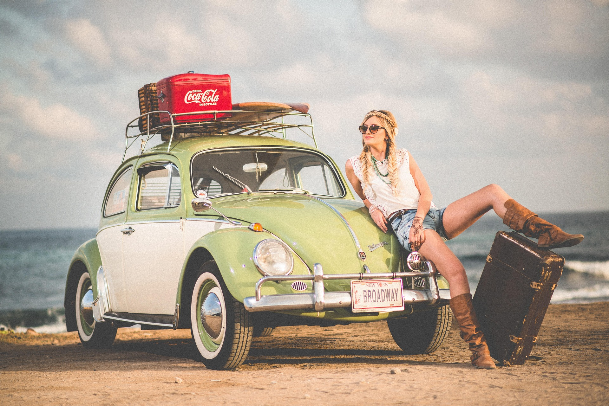
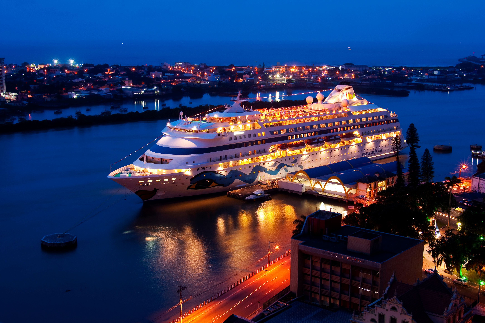

Introdução
Viajar é uma experiência enriquecedora que nos permite explorar novos lugares, culturas e perspectivas. No entanto, a escolha do veículo de transporte pode influenciar significativamente a qualidade da viagem. Cada meio de transporte oferece vantagens e desvantagens distintas, que podem afetar o conforto, a conveniência e a experiência geral do viajante. Neste contexto, é essencial considerar cuidadosamente as opções disponíveis antes de tomar uma decisão.
Preencha o formulário:
Você já sabe qual veículo escolher para uma viagem?
Carros

Viajar de carro é uma das formas mais clássicas de explorar o mundo, oferecendo uma dinâmica completamente diferente das viagens de avião ou comboio. Esta modalidade combina uma enorme sensação de liberdade com a necessidade de uma gestão logística rigorosa. Abaixo, encontram-se três grandes qualidades e três principais defeitos de fazer uma viagem de carro:
Qualidades (Vantagens)
- Liberdade e flexibilidade total: Não existem horários rígidos de embarque nem itinerários fixos. Se encontrar uma paisagem bonita, uma vila charmosa ou um restaurante convidativo no caminho, pode simplesmente parar. O viajante dita o próprio ritmo.
- Capacidade de bagagem facilitada: Ao contrário das restrições severas de peso e tamanho das companhias aéreas, no carro o limite é o espaço da mala. Pode levar objetos maiores, mudas de roupa extra e até trazer recordações ou produtos locais pesados sem a preocupação de pagar taxas adicionais.
- Economia em viagens de grupo: Quando se viaja em família ou com amigos, os custos com combustível e portagens são divididos por todos. Isto torna a viagem significativamente mais barata por pessoa do que comprar múltiplos bilhetes de avião ou de comboio.
Defeitos (Desvantagens)
- Desgaste físico e cansaço do condutor: Conduzir durante muitas horas exige uma concentração constante. O trânsito, as condições meteorológicas ou estradas desconhecidas geram fadiga acumulada, o que exige paragens frequentes para descanso e pode reduzir a energia para aproveitar o destino.
- Imprevisibilidade e riscos mecânicos: Um furo num pneu, uma avaria no motor ou um acidente podem interromper os planos de imediato. Depender de um veículo significa estar sujeito a imprevistos logísticos e financeiros com oficinas ou serviços de assistência em viagem.
- Maior tempo de deslocação: Para destinos muito distantes, o carro consome dias inteiros de viagem que poderiam ser resolvidos em poucas horas de avião. Isto reduz o tempo líquido disponível para desfrutar efetivamente do local de férias. Se estiver a planear uma viagem destas, é essencial ponderar estas vantagens e desvantagens para decidir se o carro é a melhor opção para si.
Aviões
Os aviões oferecem uma forma rápida e eficiente de viajar para destinos distantes, economizando tempo e proporcionando conforto durante a viagem. No entanto, também apresentam desvantagens como restrições de bagagem, dependência das companhias aéreas e possíveis atrasos ou cancelamentos.
Pontos Positivos
- Rapidez em longas distâncias: Permite percorrer milhares de quilômetros em poucas horas, viabilizando viagens internacionais ou conexões entre regiões distantes que levariam dias por terra.
- Segurança estatística: A aviação comercial é o meio de transporte mais seguro do mundo em relação à distância percorrida, devido aos rigorosos protocolos de manutenção e treinamento.
- Alcance global: Conecta destinos isolados, ilhas e diferentes continentes que seriam inacessíveis por carro, ônibus ou trem.
Pontos Negativos
- Custo elevado e taxas extras: As passagens costumam ter preços altos, frequentemente acrescidos de cobranças adicionais para despachar bagagem, marcar assentos ou alterar datas.
- Burocracia e tempo de espera: Exige chegada antecipada ao aeroporto para passar por check-in, controle de segurança e imigração, além do risco de atrasos ou cancelamentos por clima e malha aérea.
- Desconforto físico e impacto ambiental: O espaço reduzido nas cabines econômicas e a baixa umidade causam fadiga em voos longos, somados à alta emissão de carbono por passageiro.
MotorHome

Os motorhomes oferecem uma forma flexível e autônoma de viajar, permitindo que os viajantes explorem rotas menos percorridas e desfrutem de uma experiência mais pessoal e adaptada às suas necessidades. No entanto, também apresentam desvantagens como limitações de espaço, manutenção mais complexa e possíveis problemas mecânicos durante a viagem.
Pontos Positivos
- Liberdade de itinerário: Permite alterar planos de viagem a qualquer momento, explorando locais fora do roteiro turístico tradicional.
- Conforto e conveniência: Oferece comodidades como cozinha, banheiro e cama, proporcionando uma experiência de viagem mais confortável e autossuficiente.
- Economia em hospedagem: Reduz custos com hotéis ou pousadas, permitindo que os viajantes durmam em qualquer lugar permitido para estacionar o motorhome.
Pontos Negativos
- Limitações de espaço: O espaço interno é restrito, o que pode ser desconfortável para longas estadias ou para famílias maiores.
- Manutenção e custos operacionais: Requer manutenção regular e pode ter custos elevados com combustível, seguro e reparos.
- Dependência de infraestrutura: Necessita de locais adequados para estacionar e descarregar resíduos, o que pode limitar a liberdade em algumas regiões.
Cruzeiro

Viajar de cruzeiro é uma experiência incrível reúne transporte, hospedagem, alimentação e lazer em um só pacote. Você visita diferentes destinos sem precisar fazer e desfazer as malas a cada parada
Pontos Positivos
- Praticidade entre destinos: Você conhece vários lugares na mesma viagem sem precisar arrumar e desfazer malas ou lidar com novos traslados a cada parada.
- Refeições e lazer incluídos:Hospedagem, refeições principais e várias opções de entretenimento a bordo já fazem parte do pacote.
- Conforto e comodidade: O navio funciona como um hotel flutuante, com serviços e atividades concentrados no mesmo espaço.
Pontos Negativos
- Tempo limitado nas paradas:As escalas em cada porto costumam ser curtas, o que reduz a imersão na cultura local.
- Gastos extras a bordo:Itens como internet, bebidas fora do pacote, excursões e serviços adicionais podem encarecer bastante a viagem.
- Pouca flexibilidade e risco de alterações:O roteiro é fixo e escalas podem ser alteradas ou canceladas por fatores como o clima
Viajar é uma experiência única e enriquecedora, e a escolha do veículo certo pode fazer toda a diferença.
Seja qual for a sua preferência, o importante é aproveitar cada momento da viagem e criar memórias inesquecíveis.
A arte de viajar não está apenas nos destinos que escolhemos, mas na forma como decidimos chegar até eles e vivenciar o caminho.
Muitas vezes, criamos uma zona de conforto até mesmo nas nossas férias. Quando encontramos um formato de viagem que funciona — seja pegar um voo direto para um hotel confortável ou fazer o mesmo trajeto de carro todos os anos —, a tendência natural é repetir a fórmula. No entanto, variar o estilo das viagens transforma completamente a nossa percepção do mundo, desperta novos sentidos e nos tira do piloto automático. Cada meio de transporte e hospedagem impõe um ritmo próprio, exigindo diferentes níveis de adaptação e oferecendo recompensas únicas.